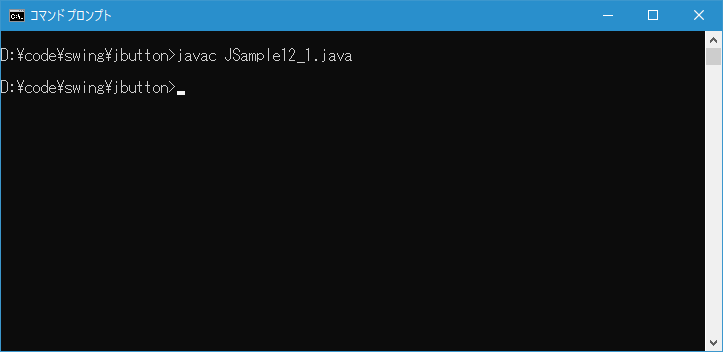
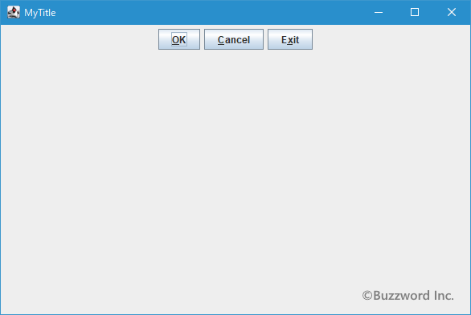
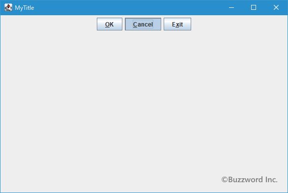

ボタンにキーボードニーモニックを設定する
ボタンにはキーボードニーモニックを設定することができます。キーボードニーモニックとはボタン毎に特定のキーを割り当て、そのキーが押されたらボタンがクリックされたのと同じ扱いをするものです。ここではボタンにキーボードニーモニックを設定する方法について解説します。
キーボードニーモニックを設定する
ボタンにキーボードニーモニックを設定するには JButton クラスの親クラスである AbstractButton クラスで定義されている setMnemonic メソッドを使います。
public void setMnemonic?(int mnemonic)
現在のモデルにキーボード・ニーモニックを設定します。 ニーモニックは、フォーカスがこのボタンの上位ウィンドウのどこかにある場合に、ルック・アンド・フィールのマウスなし修飾子(通常はAlt)と組み合わせて、このボタンを有効化するキーです。
ニーモニックはキーボード上の1つのキーに対応している必要があり、java.awt.event.KeyEventで定義されるVK_XXXキー・コードのどれかを使用して指定します。 これらのコード、およびインターナショナル・キーボード用のより広いコードの配列をjava.awt.event.KeyEvent.getExtendedKeyCodeForCharによって取得できます。 大文字、小文字は区別されないため、対応するキー・コードのキー・イベントは、Shiftキーが押されているかどうかにかかわらず、ボタンを有効化します。
ニーモニックで定義されている文字がボタンのラベル文字列にある場合は、その最初の文字に下線が付けられ、ニーモニックであることをユーザーに知らせます。
パラメータ:
mnemonic - ニーモニックを表すキー・コード
引数にはボタンに設定したいキーを表す値を指定します。値は int 型の数値で指定しますが、指定できる値は java.awt.event.KeyEvent クラスで定義されています。キーボード上のキーに対応する値がほとんど定義されていますが数が非常に多いので数値とアルファベットだけご紹介します。
数値：
KeyEvent.VK_0 から KeyEvent.VK_9
アルファベット：
KeyEvent.VK_A から KeyEvent.VK_Z
例えば KeyEvent.VK_N を設定した場合、 ALT ＋ n を押すとニーモニックが設定されたボタンが押された状態になります。(大文字小文字は関係ないので ALT ＋ N でも同じです)。
実際の使い方は次のようになります。
JButton button = new JButton("OK");
button.setMnemonic(KeyEvent.VK_O);
なお、ニーモニックに設定した文字がボタンの文字列に含まれている場合には、ボタンに表示されている文字列の該当の文字の下にアンダーバーが表示されます。またニーモニックに設定した文字がボタンに複数含まれている場合は、最初に現れた文字にだけアンダーバーが表示されます。
サンプルプログラム
それでは簡単なサンプルプログラムを作って試してみます。テキストエディタで次のように記述したあと、 JSample12_1.java という名前で保存します。
import javax.swing.JFrame;
import javax.swing.JButton;
import javax.swing.JPanel;
import java.awt.Container;
import java.awt.BorderLayout;
import java.awt.event.KeyEvent;
class JSample12_1 extends JFrame{
public static void main(String args[]){
JSample12_1 frame = new JSample12_1("MyTitle");
frame.setVisible(true);
}
JSample12_1(String title){
setTitle(title);
setBounds(100, 100, 600, 400);
setDefaultCloseOperation(JFrame.EXIT_ON_CLOSE);
JButton button1 = new JButton("OK");
button1.setMnemonic(KeyEvent.VK_O);
JButton button2 = new JButton("Cancel");
button2.setMnemonic(KeyEvent.VK_C);
JButton button3 = new JButton("Exit");
button3.setMnemonic(KeyEvent.VK_X);
JPanel p = new JPanel();
p.add(button1);
p.add(button2);
p.add(button3);
Container contentPane = getContentPane();
contentPane.add(p, BorderLayout.CENTER);
}
}
次のようにコンパイルを行います。
javac JSample12_1.java

コンパイルが終わりましたら実行します。
java JSample12_1
ボタンを 3 つ追加しました。それぞれのボタンにはキーボードニーモニックが設定されており、ボタンの表示されている文字列のニーモニックが設定されている文字と同じ文字に下線が表示されています。

それでは ALT + C を押してみます。すると中央のボタンがクリックされたのと同じ扱いになります。

-- --
ボタンにキーボードニーモニックを設定する方法について解説しました。
( Written by Tatsuo Ikura )

著者 / TATSUO IKURA
初心者～中級者の方を対象としたプログラミング方法や開発環境の構築の解説を行うサイトの運営を行っています。